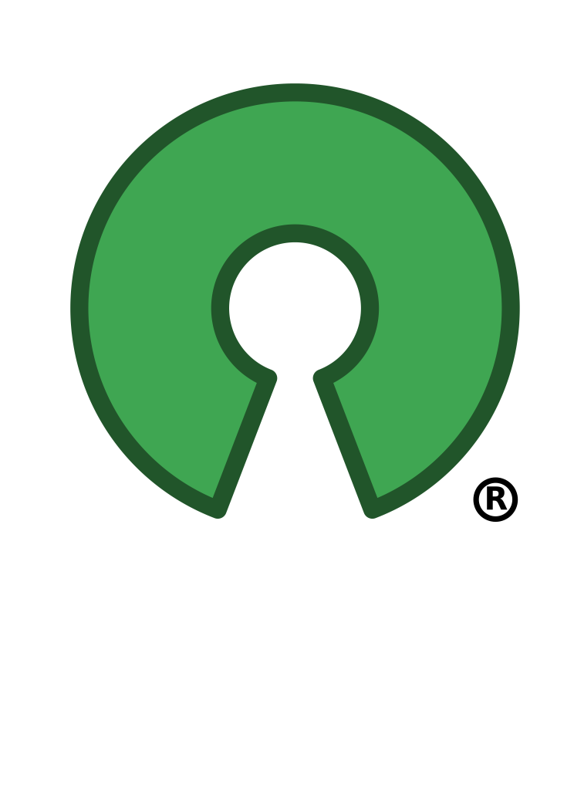

Contributing to Open-Source
Open-source in 1998
Halloween documents
Open Source Initiative
Open-source today
Governments are embracing open-source
Organizations with the most open source contributors
-
Microsoft 16, 419
-
Facebook 15, 682
-
Docker 14, 059
-
Angular 12, 841
-
Google 12, 140
-
Atom 9, 698
Source: GitHub Octoverse 2016
We have a different problem now
Open-source is taken for granted
Maintainers ≤ Contributors < Users
We need more contributors!
But why to contribute?
Giving back to the community?
For the greater good?
contribute because it helps
YOU
Who am I?
Haralan Dobrev
CTO @ Clippings.com